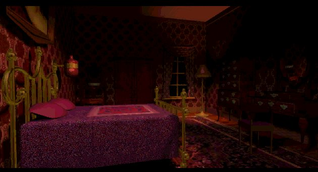

"The others will try to beat us."
In 95 Trilobyte released a windows version of The Seventh guest. The game was still the same, but it was now fully compatible with Windows. But a new version required a new box. Here are the pictures.This is the front of the box. Virgin told me that it was only released in the America. But since there isn't a Virgin interactive entertainment in America (they moved to Europe among other parts of the world), the chance to see this box is real life is rather small. But thanks to Jess Fernandez you can see the front and backside of the box, thanks a lot for the scans Jess!